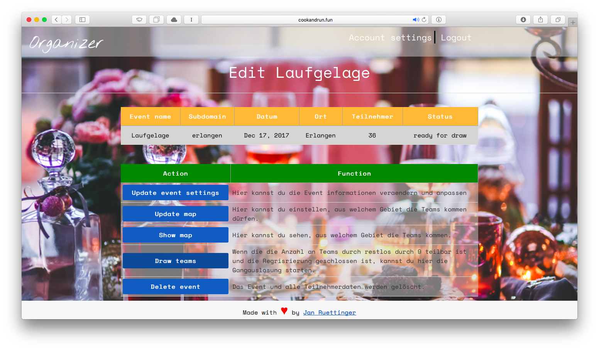
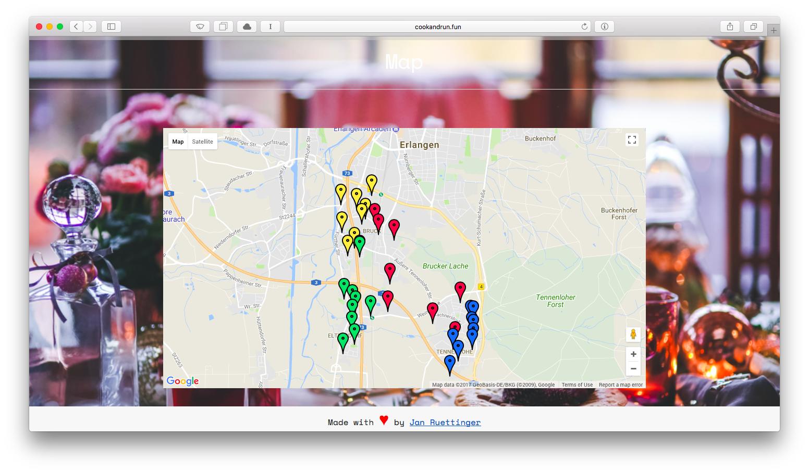
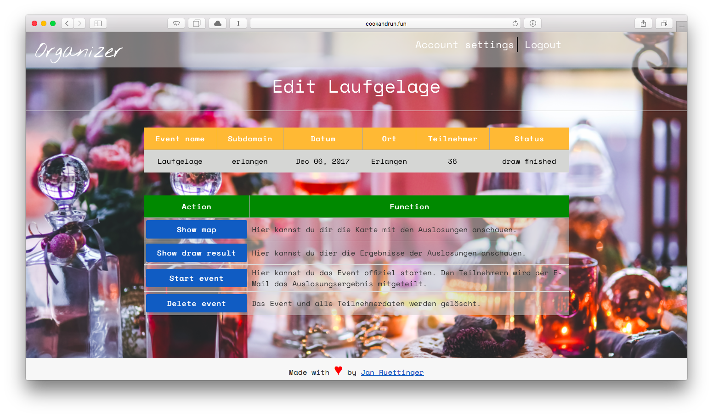
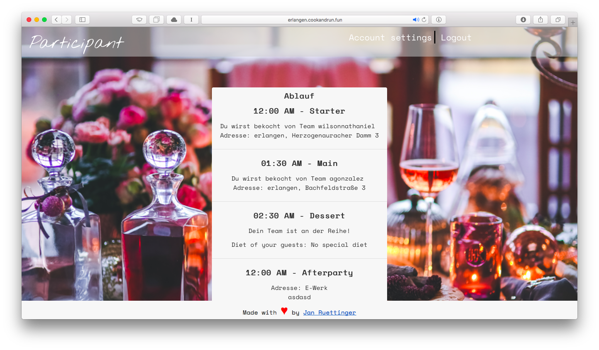

Link to project: www.cookandrun.fun
I built the project because me and my friends wanted to organize a running dinner event but nobody wanted to the organizational work. A running dinner event is an event where you team up with a partner and invite two other teams consisting of strangers to your appartment and cook a delicious meal for them. In exchange two other teams will prepare a meal for your team. At the end all teams come together for a big after party. It’s especially popular in student cities. At my university such a running dinner event takes place every semester with more than 3000 students. I wanted to build a platform to help organize such events with minimal effort.
Organizer draws the teams  The goal is that all teams who share a meal together are as close together as possible. I used K-means algorithm with a fixed cluster size to achieve a near optimal result. 
Organizer starts event 
After the event is started participants get access to their individual time table for the event 
Each event should get its own subdomain for participants to sign up. I split the platform into two seperate applications. The first application serves all requests from cookdandrun.fun. The second application is responsible for all requests from
The goal was to make it dead easy for an organizer to specify an area in which all participants need to live in order to be allowed to sign up. I use Google Maps for visualization and the Google Maps API to get the coordinates for an address and check whether it’s within the specified area or not
Currently the project is deployed on a free tier instance on AWS via four docker containers (2 web apps container, database container and nignx container). As far as the mail server is concerned I couldn’t use a normal mail providers (zoho or gmail) because they limit the number of outgoing emails. Eventually I went with the Simple Email Service (SES) from AWS. If you are using AWS to host your application then the first 62.000 emails are free each month. That’s more than enough for this project. So the current operating costs are $0.
You can find the code on github. In order to use it you need to change your configs (mail server, etc).
As always, I would love to hear your feedback!
Shoot me an email: info(at)janruettinger.com